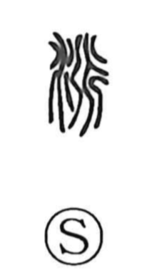

派

Kun: wakareru, tsukawasu | On: ha
faction ・ sect ・ school ・ to branch off ・ to dispatch
Explanation
派 adds 水, water, to 𠂢 as its sound element. 𠂢 itself pictures water separating into branches and is the earlier graph for the word. The fuller 派 makes the water reference explicit.
The branching current gives dividing and flowing away along separate courses. From sending a branch outward, 派 also comes to mean dispatching someone to another place or task.
A branch can remain connected with a main source while developing its own course. This gives a school, faction, or lineage within a larger tradition. The related 脈 applies the branching flow to the channels through which blood moves in the body.